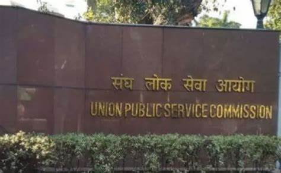
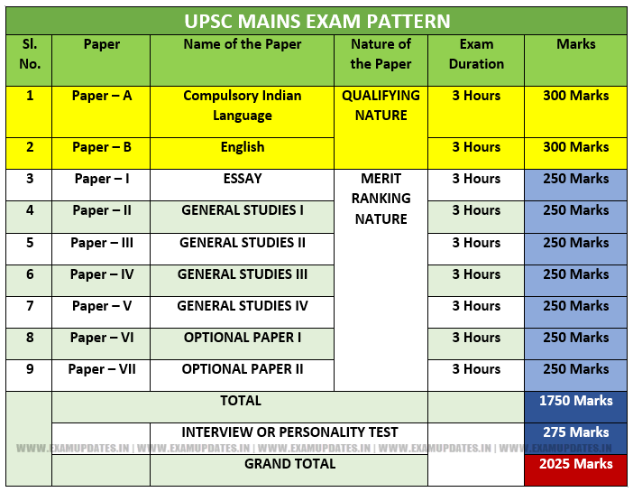

Welcome to our premier institution, the go-to destination for those aspiring to ace the Civil Services Examination. Our academy is renowned as one of the Best IAS Coaching in Delhi, thanks to our exceptional teaching methods and consistent track record of producing outstanding results. What sets this Academy apart is its commitment to providing individualised mentorship, along with class lectures delivered in the medium chosen during admission, be it English and Hindi medium.
When you enroll with us, we ensure that you have access to comprehensive study materials, so that you can focus on your preparation without worrying about finding resources. Out study materials have been developed by a highly experienced research & development team under supervision of IAS toppers, our selected students. These study materials have proven to be extremely beneficial for IAS exam preparation. Furthermore, our faculty may occasionally provide handouts or we may offer additional notes to enhance specific subject matter, to help you go above and beyond in your preparation.
The UPSC civil services exam pattern is officially divided into two stages called Preliminary and Main Examination while in practice, it is a three-stage exam. The third being Personality Test/Interview. As per the IAS exam pattern, candidates who clear the Prelims are eligible for Mains and candidates who clear the Main reach the interview stage.
Check out our collection of video tutorials:
Here are some study materials to assist your preparation: